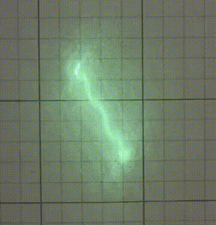

Put a membrane with a mirror over a speaker. Then project the reflection of a laser pointer over a screen. By driving the speaker with single or multiple frequencies you may observe lines and shapes projected in the screen. Given a closed trajectory in 2D of a single line, find the input on the speaker required to “paint” the line. Can you also “rotate” the line as you desire? Investigate the limitations.
We bought a laser pointer, balloons, a little bluetooth speaker that fits into a glass of water and some circular mirrors (normally used to decorate rooms). The first setup we made was the following one : We put the speaker inside of the glass, we closed it thanks to a balloon and we glued one of the mirror on the balloon. By throwing a laser beam on the mirror, we got these type of figures :
As we could observe, more complexe sounds make more complexe figures, and this is what we had to explain.
We choose the following model : a cavity made by a circular pipe closed by a speaker on one side and by a reflective membrane at the other. The the pressure within the cavity is described by the d’Alembert equation and is the origin of the membrane displacement. The latter is described by this alternative d’Alembert equation with the following hypothesis : the membrane is evenly stretched and made of a homogeneous material. For this coupling to have a solution, it is necessary to add boundary conditions described on the figure.
|
You can see on the figure the 9 first normal modes of the membrane, which correspond to the spatial part of the membrane displacement. MembraneNatural pulsations ($\omega_{mem}$) of a membrane are not harmonics (note : the joint action of the outside air with that of the cavity may render some modes quasi-harmonic) CavityPressure distributions in cavity air slices have the same shapes as the membrane normal modes Vibro-acoustic couplig with a cavityWe have here two major informations :
|
In order to visualize what the theory predicts, we made a ray tracing simulation. By selecting one or few normal modes of the membrane, and given an homogeneous pressure on the membrane, we can solve the equation that rules the membrane's displacement, and then, by ray tracing, find the reflected beam by the membrane.
One can observes the figure drawn by the system under these particular conditions. We showed the last 20 points of the reflected beam to simulate the retinal persistence and so what we could observe in the real life.

|
By repeating this simulation under a lot of different conditions, we drawn the following conclusions :
|
|
This is the setup we built :
|
|
Here is the setup in action As you can see, it was quite annoying to control the setup and to observe the figure at the same time, so we designed an interface to produce the sound we wanted, and put a webcam to observe the figure. |

|
The interface looked like that. We were able to select up to 4 pure sounds or a white noise. Because the time we had was too restricted, we didn’t have time to include a widget to change the phase of the sounds |
|
In order to characterize our setup, we drawn the Chladni figures of our cavities. We observed that the only axisymetric modes we had are the fundamentals of each cavity and that the others normal modes are non-axisymetric, which is due to the tension inhomogeneities. Speaking of tension inhomogeneities, we spent a lot of time thinking about how to stretch the survival blanket. To simplify our study, as the chladni figures of the short cavity were less complexe than the long cavity one’s, we worked only on the short cavity. In order to get the normal modes of the cavities, we used a vibrometer. |
|
Basically a vibrometry is a way to measure the velocity of one point on a structure. The vibrometer sends a laser beam to the membrane, and gives us the velocity of the membrane at the intersection of the laser beam and the membrane. |
|
As we wanted to map the behaviour of the membrane but the vibrometer only gives us information at one point, we made several measurements by vibrometry. |
|
The peaks that one can observe represent the normal modes of the whole system. |
Now that we know the normal modes of our system, let’s play a bit with the setup : By imposing a pure sond at the fundamental mode we got this figure (left one) By imposing another pure sound we got this figure (middle one) And by adding these two pure sounds together we got this : (right one) Note that as the frequencies are harmonic, the figure is not moving.

If the sounds are not harmonic, we got this :
The experiment was repeated under many conditions to draw certain conclusions If we impose a sum of harmonics we got a static figure The preponderant length is related to low frequency modes and the secondary length is related to higher frequency modes The responses of our system are not necessarily axisymmetric which is due to the tension inhomogeneties and the coupling between the cavity and the membrane The resonant cavity phenomenon are difficult to quantify and would need more investigation If we impose a sum of pure sounds whose drawings are oriented differently, we got more complexe drawings We did not have time to draw empirical laws but can nevertheless say that : To characterize the sound needed to paint a drawing, we can measure the different lengths involved, and by this knowing if one of more frequencies were imposed If the drawing is not static we can be sure that more than one frequencies are imposed and that they are not harmonic To rotate the line we can shoot the laser beam not on a modal node, but the issue with this solution is that it’s length will changes Another idea to rotate the line would be to impose 2 harmonic frequencies and add a phase between them